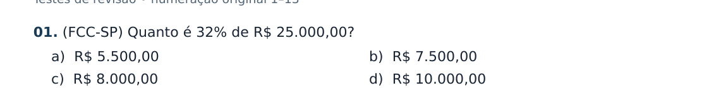
Selecione a letra correspondente às alternativas da imagem. Clique no enunciado para ampliar.
🔽 Ver gabarito comentado
Resposta: C
- 32% = 0,32.
- 25.000 × 0,32 = R$ 8.000.
Os enunciados aparecem em recortes dos materiais fornecidos. Clique na imagem para ampliar. As respostas foram calculadas para este material; não são transcrições de gabaritos oficiais.
Fotografias · Porcentagem · questão 01

Selecione a letra correspondente às alternativas da imagem. Clique no enunciado para ampliar.
Fotografias · Porcentagem · questão 02
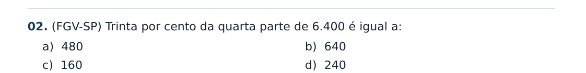
Selecione a letra correspondente às alternativas da imagem. Clique no enunciado para ampliar.
Fotografias · Porcentagem · questão 03
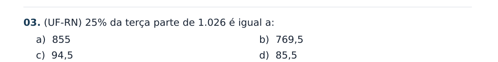
Selecione a letra correspondente às alternativas da imagem. Clique no enunciado para ampliar.
Fotografias · Porcentagem · questão 04
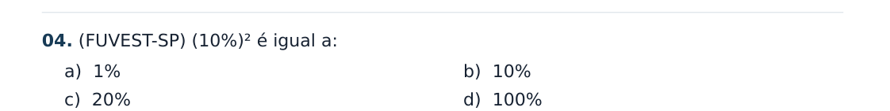
Selecione a letra correspondente às alternativas da imagem. Clique no enunciado para ampliar.
Fotografias · Porcentagem · questão 05
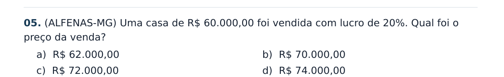
Selecione a letra correspondente às alternativas da imagem. Clique no enunciado para ampliar.
Fotografias · Porcentagem · questão 06
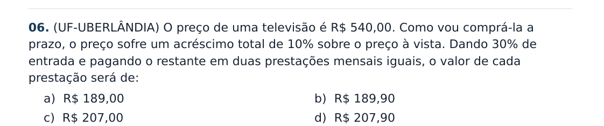
Selecione a letra correspondente às alternativas da imagem. Clique no enunciado para ampliar.
Fotografias · Porcentagem · questão 07
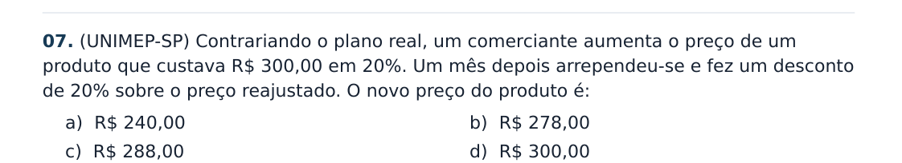
Selecione a letra correspondente às alternativas da imagem. Clique no enunciado para ampliar.
Fotografias · Porcentagem · questão 08
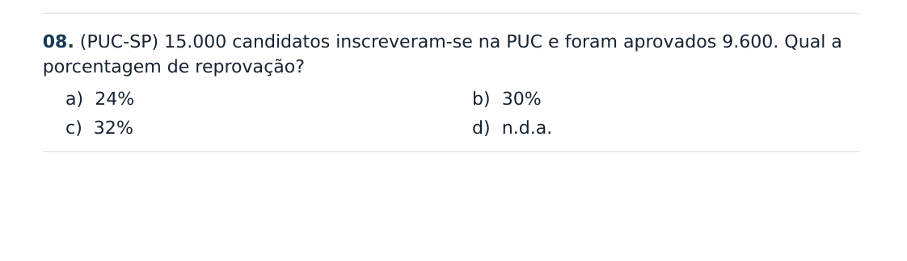
Selecione a letra correspondente às alternativas da imagem. Clique no enunciado para ampliar.
Fotografias · Porcentagem · questão 09
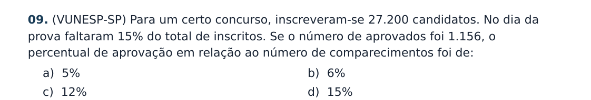
Selecione a letra correspondente às alternativas da imagem. Clique no enunciado para ampliar.
Fotografias · Porcentagem · questão 10
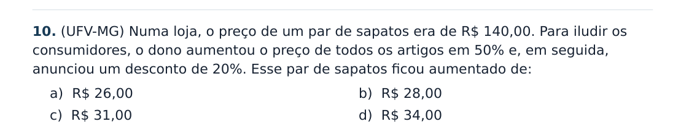
Selecione a letra correspondente às alternativas da imagem. Clique no enunciado para ampliar.
Fotografias · Porcentagem · questão 11
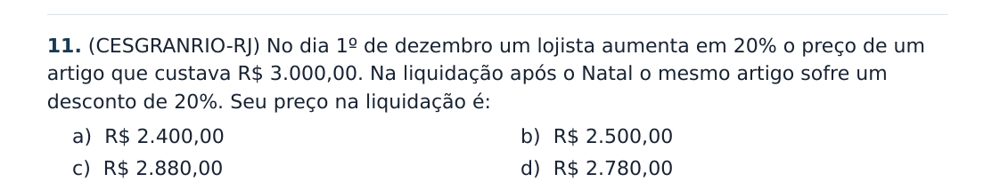
Selecione a letra correspondente às alternativas da imagem. Clique no enunciado para ampliar.
Fotografias · Porcentagem · questão 12
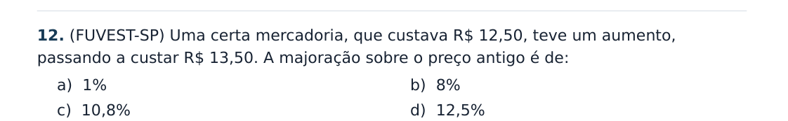
Selecione a letra correspondente às alternativas da imagem. Clique no enunciado para ampliar.
Fotografias · Porcentagem · questão 13
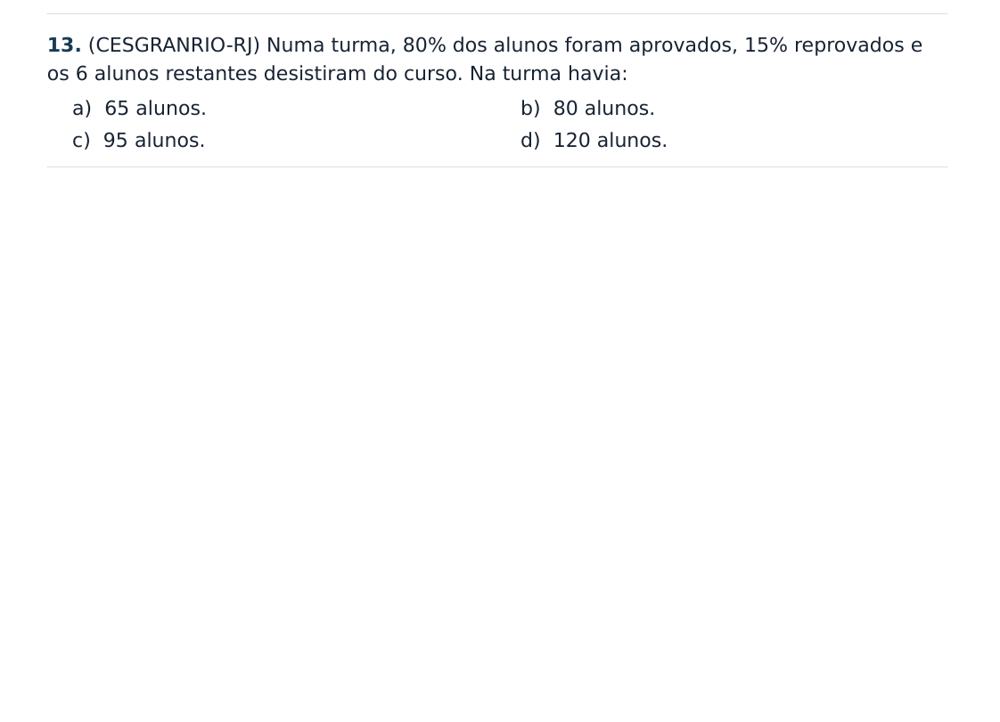
Selecione a letra correspondente às alternativas da imagem. Clique no enunciado para ampliar.
📚 Aulas particulares com Ágatha · Matemática / ETEC